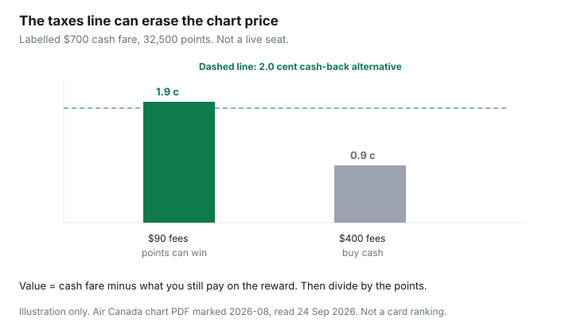

Travel · Canada
Aeroplan Dynamic Pricing Pitfalls: How to Spot a Bad Redemption Before You Click
The award screen says 38,000 points for an economy seat whose chart floor is 12,500. The cash fare that week is ordinary. People redeem anyway because the points feel spent already. They are not spent until you click. A bad price is allowed to stay in the account.
The cents-per-point formula, and the rule that you buy the ticket when points lose to cash back, is the Aeroplan versus cash guide. This page is the check you run before that formula gets a flattering cash fare. Chart figures were read from Air Canada’s June 2026 reward-chart update and the flight reward chart PDF marked 2026-08, on 24 Sep 2026. “Starting at” is not a price the airline will honour on a dynamic seat.
Disclosure: No Aeroplan or Air Canada partnership is claimed. This page does not rank credit cards. Education only.
Key takeaways
- Air Canada and a list of select partners price dynamically, at or above the chart’s “starting at” floor. Many other partners still show a chart price. The predictable seat is the one at the floor, not the one that says 35,000 on a 10,000-point route.
- Taxes, a partner booking fee, and any carrier-imposed amount on the award screen come off the value of the points. A large cash line can erase a chart-level redemption. Open that line before you click.
- March break, Christmas, July long weekends, and February sun weeks are when dynamic prices spike and partner space disappears. Compare with a normal week, not only with the week you wish were cheap.
- For leisure trips from Canada, Mexico and the Caribbean sit in the North America zone. Western Europe from Toronto or Montreal is often the Atlantic band whose economy floor fell to 32,500 on 1 June 2026. Vancouver–London is longer and can sit in the band that rose to 42,500.
- If the points price is a multiple of the floor and the cash fare is a sale you would buy, buy the cash fare. Waiting does not create a seat the calendar does not have.
Dynamic vs chart-priced partner space—what still behaves predictably
Aeroplan still prints a distance-and-zone chart. Two kinds of seats sit on top of it.
Dynamic. Air Canada flights, and select partners the chart names (the public materials include United, Emirates, Flydubai, Etihad, and a set of Canadian regionals), can price at the “starting at” floor or far above it. The floor is the best published case. It is not the Tuesday you need. A domestic seat at two or three times the floor is the dynamic pitfall, even when the screen still shows the route as available.
Chart-priced partner space. Other partners still come back at the printed chart number when the seat is there. That number is the predictable one. The catch is availability. The seat is either offered at the chart price or it is not offered. You do not negotiate it down, and a “close” price that is 10,000 points over the chart is not that product. It is dynamic, or it is a mixed itinerary. Read the carriers on the slice.
| What you see | What it usually is | Household response |
|---|---|---|
| Points equal the chart’s starting-at figure | Saver-level space, dynamic or partner | Run cents per point. If it clears your cash-back floor and the schedule is one you would buy, book it. |
| Points are a clean multiple of the floor on Air Canada metal | Dynamic pricing on a busy date or a last seat | Do not redeem because the cash fare that week is also ugly. Check a normal date. |
| Partner seat at the printed chart price | The part of the program that still behaves like a chart | Check the taxes and the partner booking fee. Then decide. |
| Nothing at the floor, only a very large number | No saver space | Buy cash or move the date. Clicking is the mistake. |
Median prices on the August 2026 PDF sit above the floors, where Air Canada shows them, for redemptions on Air Canada and select partners. Expect the median, not the poster, on the airline’s own flights. The PDF says those medians are estimates and are not a guarantee.
Fuel surcharges and carrier-imposed fees that erase cpp on some partners
Cents per point use the cash you still pay. The formula on the other guide is (all-in cash fare minus taxes and fees you still pay on the reward) divided by points. A reward that asks for a chart-level points price and then adds a large cash line is a worse redemption than the points number suggests.
Air Canada’s chart says taxes and third-party charges may apply, and that a partner booking fee applies to a reward that includes a partner airline. Government taxes and airport charges are ordinary. A partner booking fee is ordinary. A carrier-imposed surcharge, where one still appears on a particular partner, is the line that surprises people who were told “Aeroplan does not pass on fuel surcharges.” Do not budget from that sentence. Open the cash amount on the award. If the fees look like a second fare, the points did not buy the ticket. They bought a discount.
A labelled sketch, not a live seat: a $700 cash economy fare, 32,500 points, and $90 of taxes and fees on the reward. The points bought $610 of value, about 1.9 cents each. The same 32,500 points with $400 of taxes and fees bought $300 of value, about 0.9 cents. The points number did not change. The cash line did. Against a 2% cash-back alternative, the first sketch can win and the second loses. UK air passenger duty and similar foreign taxes are not a fuel surcharge, and they still count. They show up on the same line. Rerun the formula. Then stop if it loses.

Peak-date spikes within Canada and sun destinations
Dynamic prices jump when everyone wants the same airplane. For a Canadian household that is March break, the weeks around Christmas and New Year, July and August long weekends, Family Day, and the February sun weeks. Within Canada, a route whose chart floor is 6,000, 10,000, or 12,500 points can display 25,000 or 35,000 on Air Canada metal. The cents fall apart unless the cash fare is one you would have paid in dollars on that exact day.
Sun destinations in Mexico and the Caribbean are in Air Canada’s North America zone, not on the transatlantic chart. A spike there is still a within-North-America dynamic price. Partner seats at the chart floor may simply be gone. Buying the cash sale, and keeping the points for a Tuesday in November, is the household move. Redeeming a huge balance against a peak cash fare you would never have paid on a normal week is how the account empties.
If the trip cannot move, set a ceiling before you search. Example: you will redeem only if the price is at or near the floor, or if cents per point clear your cash-back alternative by a margin you wrote down. A price above the ceiling is a cash ticket. The ceiling stops the “we came this far” click. Two adults should share the ceiling. One person hunting a perfect partner seat and the other redeeming whatever the screen shows will spend the account on the second habit.
Tools and calendar searches that surface saver-level space
You do not need a paid subscription to see whether a price is bad. You need the chart and two searches.
- The flight reward chart PDF dated on the file you open. Find the zone and the distance band. Write the starting-at economy figure on a piece of paper. That is the number the search has to beat, or at least approach.
- Aeroplan’s own search, including the flexible calendar if it is offered for that route. Look for a day at the floor, not only for your preferred Saturday. A Friday at 12,500 and a Saturday at 30,000 is an easy decision if you can move a day.
- A cash search on the same dates, on the airline or on a flight search tool. The cash fare is the other half of cents per point. An award with no cash comparison is a guess.
- An alert on the cash fare, inside the booking window in the when-to-book guide. If the cash price falls to a number you would pay, buy it and leave the points alone.
Third-party calendars can show partner space. They are optional, they go stale, and this page does not send you to a paid one. If you use one, confirm the seat on Aeroplan before you transfer a single point. A phantom seat is not saver space. Mixed-cabin itineraries and 20-hour connections that exist to juice a spreadsheet are the hobby version of this search. The household version is one reasonable route in economy, or a cabin you chose on purpose and priced on purpose.
When to wait, set alerts, or just buy cash during a sale
Wait when you are weeks out, the points price is a multiple of the floor, and the date can move. Check again. Saver space is released and disappears. It does not improve because you refreshed the page every hour tonight.
Set a cash alert when the dollar fare is the thing that might become the right answer. Buy cash when any of these is true:
- Cents per point are under the cash-back alternative you actually earn, or under 1 cent if you have no cash-back comparison. The other guide uses 1 cent as the floor for a fixed program such as Scene+.
- The only award is far above the chart floor and the cash fare is an ordinary sale.
- You are inside two weeks and the schedule you need is the schedule on the cash ticket.
- You would carry a card balance to avoid spending points. Interest wins that argument.
Do not wait through a cash sale you would have bought, hoping the award returns to the floor on the same Saturday. The sale is the decision. Points remain available for a later trip that prices properly. A refundable cash fare, if the difference is small, is the way to hold a plan while you watch. A basic fare you cannot change is not a holding tool. That mistake is the booking-mistake guide.
Post-June 2026 chart changes: which distance bands matter for leisure Canada trips
The chart that applies to tickets booked or reissued on or after 1 June 2026 is the one to use. Air Canada’s note defines North America as Canada, the United States, Mexico, and the Caribbean. Atlantic includes Europe, Africa, the Middle East, and India. A leisure trip from Canada falls into a small set of bands. Measure the route. Do not memorize one number called “Europe” or “sun.”
| Trip | Zone and band | Economy floor to know |
|---|---|---|
| Short-haul inside Canada or to the northern U.S. | North America, 0–500 miles, then 501–1,500 | 6,000, then 10,000, on the August 2026 within-North-America table |
| Longer Canada, sun, or cross-border (often 1,501–2,750 miles) | North America. Mexico and the Caribbean are in this zone | 12,500. Beyond 2,750 miles the floor on that table is 17,500 |
| Toronto or Montreal to much of Western Europe | North America–Atlantic, often 0–4,000 miles | Fell from 35,000 to 32,500 for bookings on or after 1 June 2026 |
| Vancouver to London, and other longer Atlantic hauls | North America–Atlantic, 4,001–6,000 miles | Rose from 40,000 to 42,500. Business floors in this band rose too. Economy is the household test |
A sun week that prices at 30,000 points is not “a bit above Europe.” It is far above a North America floor of 10,000 or 12,500. A Toronto–Europe award at 32,500 is the new floor, not a bargain you discovered, and only if the taxes line stays sane. Business-class increases in the June note (including partner business on long Pacific bands, and higher partner first-class floors) are real, and they are optional. This page does not chase them. If economy cash is reasonable, buy economy and keep the points for a short-haul you will take.
Distance is the distance flown, not the distance you wish the cities were. A connection through a third city can push a trip into the next band and add a partner fee. Price the nonstop or the simple connection first. Then stop. The Scene+ versus Aeroplan guide is the prior question: whether this program is the one your household will actually redeem.
Sources & date stamps
- Air Canada, “An update on the Aeroplan Flight Reward Chart” — bookings or reissues on or after 1 June 2026; North America–Atlantic economy 35,000 to 32,500 in the 0–4,000 mile band and 40,000 to 42,500 in the 4,001–6,000 mile band; zone definitions. Read 24 Sep 2026.
- Air Canada flight reward chart PDF marked 2026-08 — within-North-America economy starting-at amounts 6,000 / 10,000 / 12,500 / 17,500; starting-at prices are not guaranteed; partner booking fee; taxes and third-party charges may apply; medians are estimates. Read 24 Sep 2026.
- The labelled $700 / 32,500 / $90 / $400 arithmetic is an illustration, not a published fare.
Frequently asked questions
What is a bad Aeroplan redemption?
A points price far above the chart’s starting-at floor on a route where cash is ordinary, or any price whose cents per point lose to the cash back you would earn instead. Points at the floor, with a modest taxes line and a schedule you would buy, are the opposite.
Which Aeroplan seats still have a predictable price?
Many partners still return at the printed chart number when the seat exists. Air Canada and the chart’s select partners, including United, price dynamically at or above the floor. A clean multiple of the floor on Air Canada metal is dynamic pricing, not a sale.
Do fuel surcharges wipe out Aeroplan awards?
Sometimes the cash line does, whatever it is called. Taxes, a partner booking fee, and any carrier-imposed amount still due on the award come out of the value. The same 32,500 points can be a fair trade at $90 of fees and a poor one at $400. Open the line before you click.
What changed on 1 June 2026 for a typical Canadian trip?
Bookings on or after that date use the updated chart. North America–Atlantic economy under 4,000 miles, the usual Toronto or Montreal to Western Europe band, fell from 35,000 to 32,500 points. The 4,001–6,000 mile band, which can include Vancouver–London, rose from 40,000 to 42,500. Sun trips in Mexico and the Caribbean stay in the North America zone.
Should I redeem during March break or just pay cash?
Pay cash when the only award is a multiple of the floor and the dollar fare is one you would actually buy. Peak weeks are when dynamic prices spike and partner seats disappear. Keep the points for a date nearer the floor.